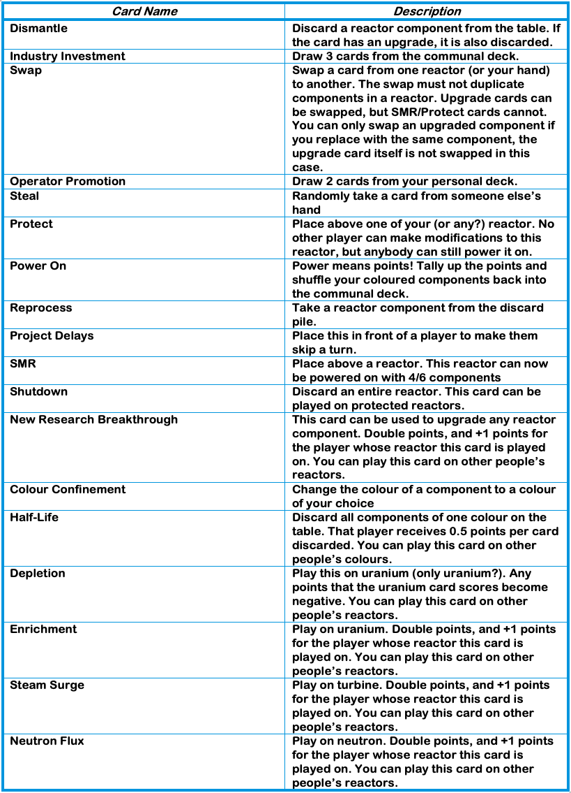

Instructions Page
The year is 2045. The world needs reliable power, and it needs it now. The days of fossil fuels are gone, and the governments around the world are determined to reach Net Zero Carbon Dioxide emissions. Nuclear power is the best chance we have of providing electricity sustainably and reliably, and the planet needs YOU to help build new nuclear reactors.
Objective:
Score the most points by building and powering on your own nuclear reactors!
Quick Information:
• Players: 2 – 5
• Age: 11+
• Time: 30 minutes – 90 minutes
Race to Reactor Game Box Contents:
• A rulebook (this book)
• 5 prompt rule cards
• 234 playing cards, divided up as follows:
Getting Started:
Each player chooses a coloured deck of cards (red, blue, green, yellow, or purple). If there are fewer than 5 players, the colour(s) not chosen are not included in the game.
Collect all the cards of your chosen colour and shuffle them into a pile; this is your personal deck. 10 random cards from each player’s personal deck are then shuffled into the communal deck. The communal deck will consist of 10 coloured cards from each player, and all the neutral (grey) cards.
Gameplay:
To start the game each player picks up 5 cards from their personal deck. At any point in the game, if you have duplicated reactor parts in your hand (these are numbered 1-6 in the top left), you must discard both into a discard pile immediately before continuing. This rule applies only to reactor parts, not to upgrade/action cards. For example, if the first 2 of 5 cards you pick up are duplicates, you must discard both before drawing any more.
Once each player has picked up (and resolved any duplicated cards), the player who can recite furthest in the periodic table starts (or whomever you like if you do not fancy the reciting the periodic table approach!).
Starting with the decide first player; draw 2 cards from the communal deck and 1 card from your personal deck. This then continues around the table for the entirety of the game.
A few points to remember:
• Players must have 8 or fewer cards at the end of their turn.
• Players can play 4 cards total per turn and start building their reactors.
• Reactor components are played in front of you (numbered 1-6), as are upgrades, and action cards once used are placed into the discard pile.
• You must have the reactor component played in front of you to use any associated upgrade card.
• You can have up to 2 piles of reactor components in front of you
To end your turn, pass a card to any other player.
If you have more than 8 cards in your hand after passing a card to another player, you must discard cards until you have 8 in your hand.
How to Score Points:
Points are scored by playing a ‘Power On’ card onto a complete reactor (1-6 reactor components played on the table). Each coloured (non-grey) reactor component in the powered-on reactor gives a point to the person whose colour the component is, and the first player to power on a reactor gets a bonus +2 points.
After tallying points, whoever played the ‘Power On’ card shuffles their coloured reactor components back into the communal deck.
You can power on other people’s reactors.
Gameplay Example:
Blue plays ‘Power On’ on their own reactor
Green with depleted: 1 base point for green, but depleted turns it to -1, GREEN -1
2 Blue with neutron flux upgrade: 1 base point for blue, doubled due to upgrade, and +1 for upgrade card in their reactor, BLUE +3
3 Blue, BLUE +1
4 Red, RED +1
5 Neutral, 0
6 Blue, BLUE +1
Totals: GREEN -1, BLUE +5, RED +1
Blue 2,3,6 shuffled into communal deck
Ending the Game:
The game ends when there are no more cards to draw in the communal deck. The player with the most points at the end of the game is declared the winner!
Cards Explained:
• Action cards affect other players and upgrades
Quick Play Mode:
For a shorter game, choose a colour as normal, but don’t shuffle any coloured cards into the communal deck. The first player to power on a complete (all 6 components, regardless of colour) reactor wins!
Overlooked rules:
• The duplicate rule, please discard both reactor parts
• You do not have to play the cards in order of 1 – 6
• Upgrades: You receive double points of the card itself and the reactor it is played on receives another point
• Do not forget to pass a card at the end of your turn
• The first player to power on a reactor gets a bonus of +2 points
• You can only work on two personal reactors at a time on the table but can play on any number of other players' reactors
• You can only discard cards if you have more than 8 at the end of your turn